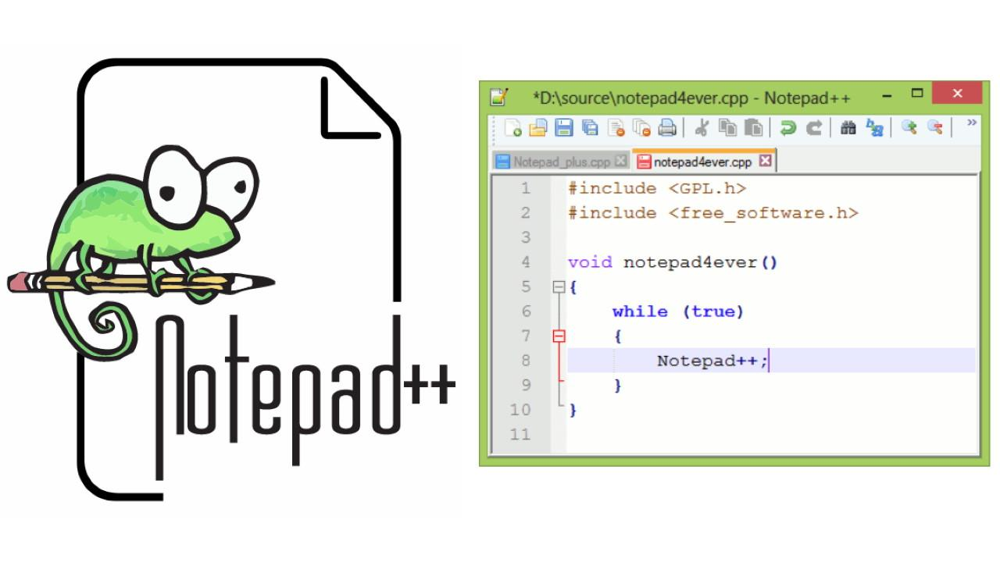

В сентябре 2003 года инженер-программист Дон Хо (Don Ho) создал прототип Notepad++ на базе Scintilla (C++). Он являлся альтернативой редактору (Java), над которым работал Дон Хо в компании JEXT. Однако более производительное решение на C++ в компании принято не было.25 ноября 2003, после 2-3 месяцев разработки в свободное от работы время, код Notepad++ было выложен на SourceForge. Он был скачан (по состоянию на 23 июля 2015 года) более 29 миллионов раз.В 2007 году Notepad++ стал доступен не только на Windows, но также появились кросс-платформенные версии для Mac OS X и Linux (Ubuntu).В 2010 году из-за блокировки правительством США SourceForge.net для стран из «чёрного списка»
Программа поставляется в двух версиях: UNICODE и ANSI, причём последний вариант доступен только при ручной распаковке архива. Плагины могут быть написаны под определённую версию программы, но чаще плагин работает в обеих версиях, хотя в последнее время акцент делается на UNICODE-версию, как наиболее перспективную.Для linux программа работает через wine, доступна через набор программ в winetricks, альтернативно подобную функциональность могут дать kate или notepadqq.